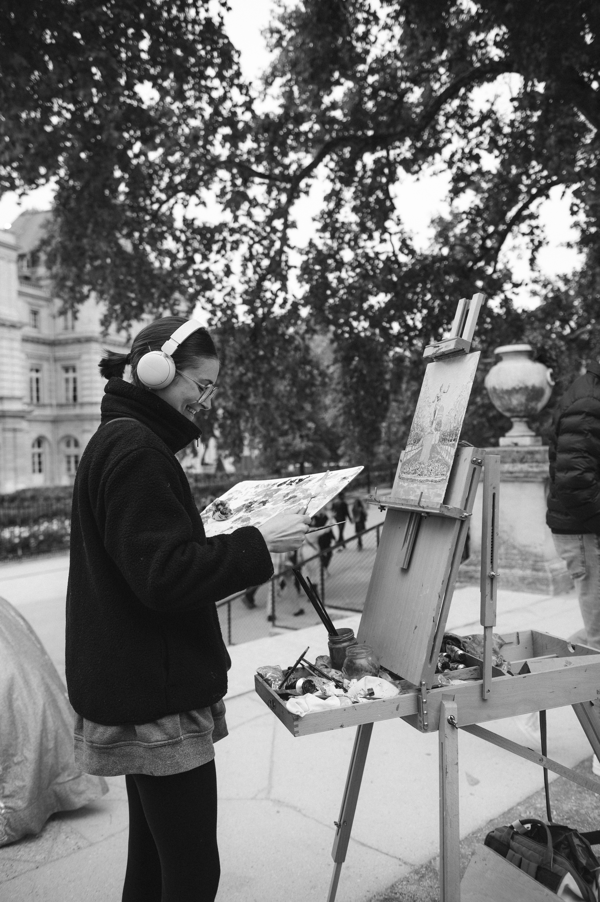

Entiendo la pintura como una forma de detener el tiempo frente al entorno, ya sea en la frondosidad de un jardín o en la arquitectura de la ciudad. Trabajo habitualmente al aire libre (plein air), trasladando el caballete para atrapar la luz fugaz y el ambiente de cada lugar, un proceso que luego continúa en la calma del estudio.
Cada pincelada al óleo busca trasladar al lienzo la atmósfera real y la verdad de aquello que tengo enfrente.